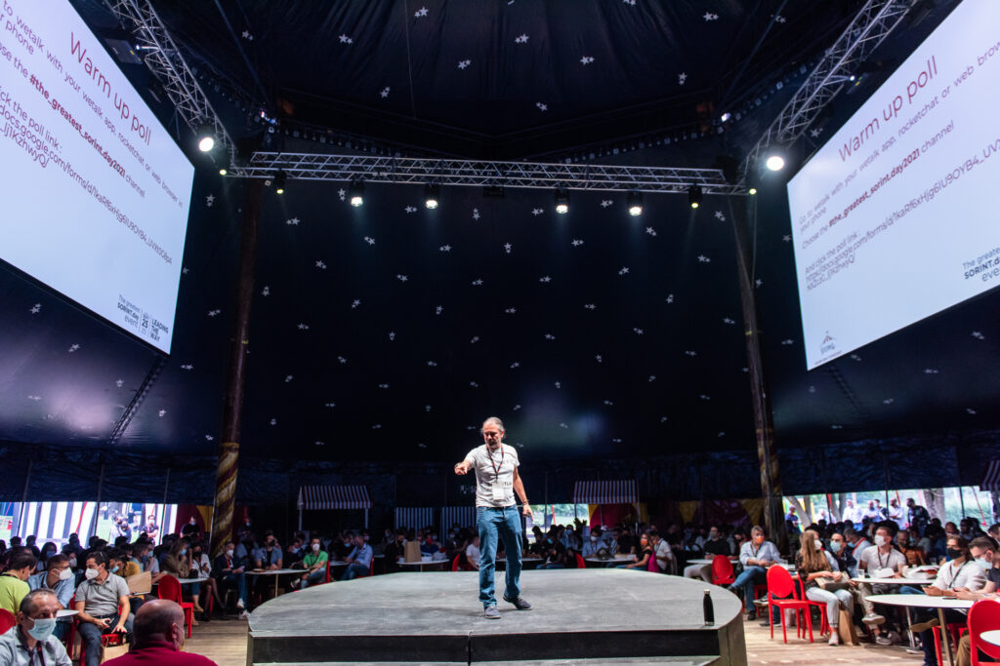

Sorint.US provides managed platform services for organizations that already have a platform footprint and now need operational coverage, engineering stewardship, and a partner who can run the stack without letting it drift.

Once the platform is live, the work shifts. SRE hygiene, cloud cost control, patching, incident response, access reviews, pipeline maintenance, and backlog stewardship become the difference between a platform that compounds value and one that slowly turns into a liability.
Sorint managed services gives you a team that can operate the platform, support internal users, and keep improving the system while your internal leaders stay focused on product and business priorities.
The service model is flexible. Some clients need a run-and-support layer around an existing internal platform team. Others want Sorint to own a broader slice of operations, automation, reliability, and improvement planning.
Monitoring, incident response, SLO discipline, observability tuning, environment health checks, and remediation coordination.
Pipeline maintenance, infrastructure lifecycle support, automation coverage, and operational guardrails that reduce fragile manual work.
Policy enforcement, secrets handling, access reviews, compliance support, and operational governance for regulated or complex environments.
Portal upkeep, golden-path maintenance, internal enablement, support intake, and the operational work needed to keep adoption strong.
Cost visibility, rightsizing, usage optimization, and planning that keeps platform economics under control as adoption grows.
Managed services should not mean "keep the lights on and stop." Sorint keeps an improvement backlog moving alongside operations.
Operate the day-to-day platform, respond to incidents, maintain automation, and keep service reliability within agreed thresholds.
Reduce operational debt, improve automation, tighten governance, and increase self-service maturity while the platform stays in production.
Maintain leadership cadence with architects and senior engineers so operating decisions stay aligned with the broader platform roadmap.
| Service Layer | Typical Scope | Who Leads | Typical Fit |
|---|---|---|---|
| Operational Coverage | Incident response, monitoring, runbooks, patching | Sorint operations engineers | Teams that need stability and responsiveness |
| Engineering Stewardship | Automation, reliability tuning, CI/CD and infra upkeep | Senior platform engineers | Teams that need active technical ownership |
| Governance & Optimization | Security, compliance, cost, reporting, roadmap reviews | Architects and service leads | Teams in regulated or complex enterprise settings |
Sorint's managed services posture is grounded in real enterprise support, automation, cloud, and multi-environment operations. This is not a generic help desk model. It is technical stewardship for complex platforms with business-critical workloads behind them.

Sorint supports enterprise environments where uptime, governance, and response discipline materially affect the business.
Multi-office coverage gives clients options for business-hour support, extended operations, or more comprehensive service windows.
The managed model includes an improvement mindset so your platform does not just stay online; it gets more usable, resilient, and efficient over time.

Sorint stabilized a critical environment with cloud migration, governance improvements, JD Edwards upgrade support, and 24x7 managed services backed by FinOps.

Automation, provisioning, disaster recovery, patching, and infrastructure optimization reduced manual effort and created a more supportable operating environment.
“Gold medal. SORINT could not do better, perfect! Every promise and every deadline was met!”

“The governance factor ensured the project is delivered within budget, while maintaining flexibility to adapt our evolving needs.”

“Synergy, timely management of reports, and consistent response time to operational needs stood out for us!”


Sorint engineering community - 1,500+ professionals across 17 offices
We can review your current stack, support burden, incident patterns, and governance requirements, then propose the service model that fits.
Meet with a Sorint engineer to review platform support needs, coverage expectations, and where managed services can remove operational drag.
Book the ReviewIf your platform direction is still being defined, begin with the consulting version and shape the operating model before you outsource operations.
View Platform Consulting